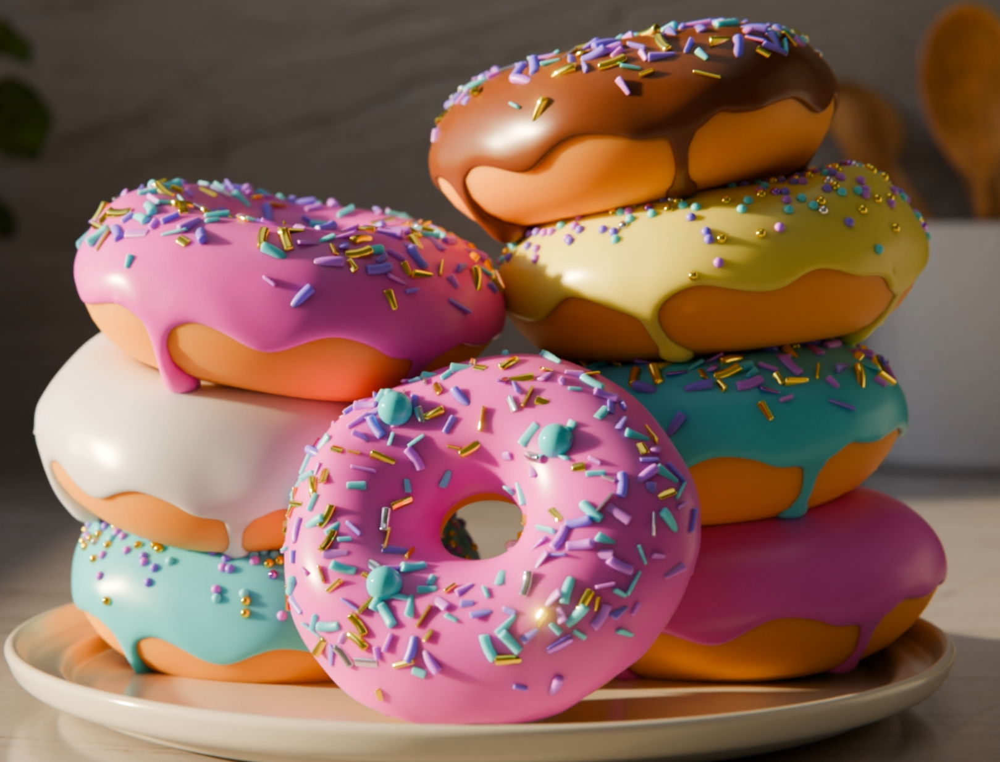

Donuts Scene
Food Visualization / Still Life

In this stylized donut scene, I aimed to explore a colorful and playful universe. Inspired by Blender Guru’s famous tutorial, I reimagined the classic donut creation with a cartoon-like, exaggerated, and vibrant approach.Every element, from the thick frosting to the colorful sprinkles, was carefully crafted to evoke a sense of sweetness and abundance.
The stacked composition of the donuts was designed to create a feeling of spontaneity while naturally guiding the viewer’s eye toward the center of the image.